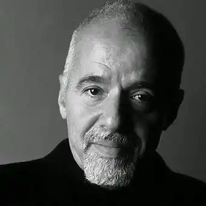

Народився 24.08.1947 року в Ріо-де-Жанейро, Бразилія
Бразилець Пауло Коельо — один з найбільш непересічних письменників у світі.
З 1988 року, з моменту виходу знаменитого "Алхіміка", його романи, перекладені на 52 мови, входять в розряд культових і на сьогоднішній день вже продано більше тридцяти п'яти мільйонів книг в 140 країнах світу. Пауло Коельо народився в Ріо-де-Жанейро в 1947 році, в родині інженера. З дитинства він мріяв стати письменником. Але в 60-е роки в Бразилії мистецтво було заборонено військовою диктатурою. У той час слово "художник" було синонімом слів "гомосексуаліст", "комуніст", "наркоман" і "нероба". Турбуючись про майбутнє сина і намагаючись захистити його від переслідувань влади, батьки відправляють 17 річного Пауло в психіатричну лікарню. Вийшовши з лікарні, Коельо стає хіпі. Він читає все без розбору — від Маркса і Леніна до "Бхагават-гіти". Потім, засновує підпільний журнал "2001", в якому обговорюються проблеми духовності, Апокаліпсис. Крім цього Пауло пише тексти анархічних пісень. Зірка року Raul Seixas, бразильський Джим Моррісон, зробив їх такими популярними, що Коельо відразу стає багатим і знаменитим. Він продовжує шукати себе: працює журналістом у газеті, намагається реалізуватися в театральній режисурі і драматургії. Але незабаром теми його віршів привернули увагу влади. Коельо звинувачують у підривній антиурядовій діяльності, за що тричі заарештовують і піддають тортурам. Вийшовши з в'язниці, Коельо вирішує, що настав час зупинитися і стати нормальною людиною. Він перестає писати і робить кар'єру в CBS Records. Але в один прекрасний день його звільняють без всяких пояснень. І тоді він вирішує відправитися подорожувати. Випадкова зустріч в Амстердамі приводить його в католицький орден RAM, створений у 1492 р. Тут Пауло навчився розуміти мову знаків і ознак, що зустрічаються на нашому шляху. Згідно з ритуалом шляху, орден направляє його у паломницьку подорож в Сантьяго де Компостелла. Подолавши 80 кілометрів по легендарної стежці паломників, Коельо описав цю подорож у своїй першій книзі "Паломництво", виданої в 1987 році. Незабаром за нею пішла і друга — "Алхімік", що принесла авторові світову популярність. "Алхімік" до сих пір залишається найбільш продаваною книгою в історії Бразилії і навіть згадується в Книзі рекордів Гіннеса. У 2002 році португальський "Журнал де Летрас", авторитетне видання в області місцевої літератури і літературного ринку, оголосив про те, що кількість проданих примірників "Алхіміка" перевищує кількість проданих примірників будь-якої іншої книги, написаної на португальському за всю історію розвитку цієї мови. У травні 1993 року видавництво "ХарперКоллинз" випустило 50 000 примірників "Алхіміка", що далеко перевершує початкові тиражі всіх інших бразильських книг, коли-небудь виходили в Сполучених Штатах. Джон Лоудон, виконавчий директор "ХарперКоллинз", на церемонії випуску тиражу сказав: "Це все одно, що прокинутися на світанку і побачити, як сходить сонце, поки увесь інший світ ще спить. Зачекайте, поки всі прокинуться і теж побачать сонце". Такий ентузіазм з боку "ХарперКоллинз" вельми порадував Пауло. "Для мене це особливий момент", — сказав він. Видавець на церемонії додав: "Сподіваюся, що історія публікації цієї книги в США виявиться такою ж довгою, захоплюючою і успішною, як і саме це оповідання". Десять років тому, в 2002 році, Джон Лоудон написав Пауло: "Алхімік" у нашому видавництві став однією з найважливіших книг останніх років. Ми пишаємося цією книгою і її успіхом. Історія її успіху у нас — під стати самої історії, описаної в цій книзі!" У план ювілейних урочистостей на честь першої публікації видавництво "ХарперКоллинз" включило випуск міжнародної версії книги, призначеної для задоволення попиту постійно зростаючої армії її прихильників по всьому світу. Джулія Робертс: "Це наче музика! Те, як він пише, — це чудово!" ("Пауло Коельо, Алхімік слова", документальний фільм, виробництво Діскавері/Поло де Имахем). Мадонна: "Алхімік" — чудова книга про магію, мрії і скарби, які ми шукаємо скрізь, а знаходимо у себе на порозі" (інтерв'ю німецькому журналу "Зонтаг-Актуэль"). До публікації в США "Алхімік" виходив у невеликих іспанських і португальських видавництвах. В Іспанії книжка не входила в список бестселерів до 1995 р. Сім років потому Видавнича гільдія Іспанії написала, що "Алхімік" ("Эдиториал Планета") стала кращою продаваною книгою 2001 року в Іспанії. У 2002 році іспанське видавництво подготовилобеспрецедентный випуск зібрання творів Пауло Коельо. В Португалії, де розійшлося більше мільйона екземплярів його книг, Коельо також вважається самим продаваним автором ("Эдиториал Пергаминьо"). Моніка Антунес, яка співпрацювала з Пауло з 1989 року, після того, як прочитала дві його книги, в 1993 році разом з Карлосом Едуардо Ранхелем заснувала в Барселоні літературна агенція "Сан-Джорді Асосиадос" з метою продажу прав на твори Коельо. У травні того ж року, після публікації "Алхіміка" в Сполучених Штатах, Моніка запропонувала твір кільком міжнародним видавцям. Першим права набуло норвезьке видавництво "Екс лібріс". Його власник, Ойвинд Хаген, писав Моніці: "Ця книга справила на мене сильне і глибоке враження". Кілька днів потому власниця щойно заснованого видавництва "Анн Кар'єр Эдисьон" писала в листі-Моніці: "Це дивовижна книга, і я хочу зробити все від мене залежне, щоб вона стала бестселером у Франції". У вересні 1993 року "Алхімік" очолив список бестселерів Австралії. "Сідней Морнінг Геральд" заявив: "Це книга року. Чарівний приклад безмежного витонченості і філософської глибини". В квітні 1994 року "Алхімік" вийшов у Франції ("Анн Кар'єр Эдисьон"). У пресі він отримав прекрасні відгуки, а читаюча публіка прийняла книгу з захопленням. Так "Алхімік" почав сходження по списку бестселерів. За два дні до Різдва Анн Кар'єр писала Моніці: "Посилаю вам в подарунок список бестселерів з Франції. Ми на першому місці!" В кожному французькому списку ця книга перебувала на першому місці, де і протрималася п'ять років. Після такого феноменального успіху у Франції книги Пауло Коельо перестали бути суто літературним явищем і, заручившись підтримкою Європи, почали свій тріумфальний хід по всьому світу. З тих пір кожен з шести романів Коельо, перекладених на французьку мову, встиг очолити списки бестселерів, утримуючи позиції протягом кількох місяців. Одного разу три романи одночасно очолювали кращу десятку. Роман "Біля річки Пьедра я сиділа і плакала", опублікований в Бразилії видавництвом "Рокка", підтвердив міжнародний статус письменника. У цій книзі Пауло звертається до жіночої стороні людської природи. У 1995 році "Алхімік" був опублікований в Італії ("Бомпьяни") і тут же зайняв першу позицію в списку бестселерів. В наступному році Пауло Коельо був удостоєний двох престижних італійських премій — "Супер Грінцане Кавур" і "Флаиано Інтернешнл". В 1996 році "Эдиториал Обжетива" отримала права на книгу "П'ята гора", заплативши аванс в мільйон доларів — найбільший з усіх, що коли-небудь отримували бразильські автори. У тому ж році Пауло був удостоєний звання "Chevalier des Artes et des Lettres ", а Філіп Дуст-Блазі, міністр культури Франції, заявив: "Ви стали алхіміком для мільйонів читачів. Ваші книги творять благо: вони спонукають нас мріяти і ведуть на пошуки духовної істини". У тому ж 1996 році Коельо був призначений особливим радником програми ЮНЕСКО "Духовні точки дотику і міжкультурні діалоги". У тому ж році "Алхімік" був опублікований і в Німеччині ("Диогенес"). У 2002 році видання у твердій обкладинці побило всі рекорди, протримавшись більше шести років в списку бестселерів журналу "Дер Шпігель". У 1997 році на Франкфуртському книжковому ярмарку його видавці разом з представниками "Диогенес" і "Сан-Хорді" влаштували вечірку на честь Пауло і в честь наступної тоді ж міжнародної публікації "П'ятої гори". Це сталося в березні 1998 року, і головні урочистості проходили в Парижі. Пауло привів у захват його успіх у Книжковому салоні ("Салон дю Лівр"), де він підписував свої книги протягом семи з гаком годин. Його французький видавець, Анн Кар'єр, організувала в його честь вечеря в музеї Лувр. Цей вечеря відвідали кілька сотень знаменитостей і журналістів. У 1997 році Коельо опублікував свою чергову книгу — "Підручник воїна світла", збори філософських думок, що допомагають нам відкрити воїна світла в самих собі. Мільйони читачів оцінили цю книгу по достоїнству. Вперше вона була опублікована в Італії ("Бомпьяни"), де мала приголомшливий успіх. У книзі "Вероніка вирішує померти", опублікованій у 1998 році, Коельо повертається до оповідній манері. Цей роман отримав прекрасні відгуки. У січні 2000 року Умберто Еко в інтерв'ю для "Фокуса" сказав: "Мені подобається останній роман Коельйо. Він і справді справляє на мене глибоке враження". Шинед О'коннор в інтерв'ю "Айріш Сандей Індепендент" зауважила: "Сама неймовірна книга, яку я коли-небудь читала, — це "Вероніка вирішує померти". Восени 1998 року Пауло здійснив турне по Азії та країнах Східної Європи, почавши його в Стамбулі, проїхавши на Східному експресі через Болгарію і завершивши свій шлях у Ризі. Журнал "Лірі" (березень 1999 р.) оголосив його другим з найбільш продаваних авторів 1998 року у всьому світі. У 1999 році Письменник був удостоєний престижної нагороди "Крістал эуорд". Як було сказано на Міжнародному економічному форумі, "Пауло об'єднав такі різні культури силою слова, чим і заслужив цю нагороду". З 1998 року і донині Пауло залишається почесним членом Міжнародного економічного форуму. У 2000 році його обрали члени правління Швабського фонду соціального підприємництва. У 1999 році Французький уряд удостоїла його звання кавалера Національного ордена Почесного легіону. У тому ж році Пауло взяв участь у книжковому ярмарку в Буенос-Айресі, де демонстрував книгу "Вероніка вирішує померти". Відвідувачі відреагували на несподіване присутність Пауло надзвичайно емоційно. Всі засоби масової інформації погодилися, що ніхто з інших авторів не може зібрати таку численну публіку. "Колеги, які працюють на книжковому ярмарку протягом останніх 25 років, стверджують, що не бачили нічого подібного, навіть коли був живий Борхес.